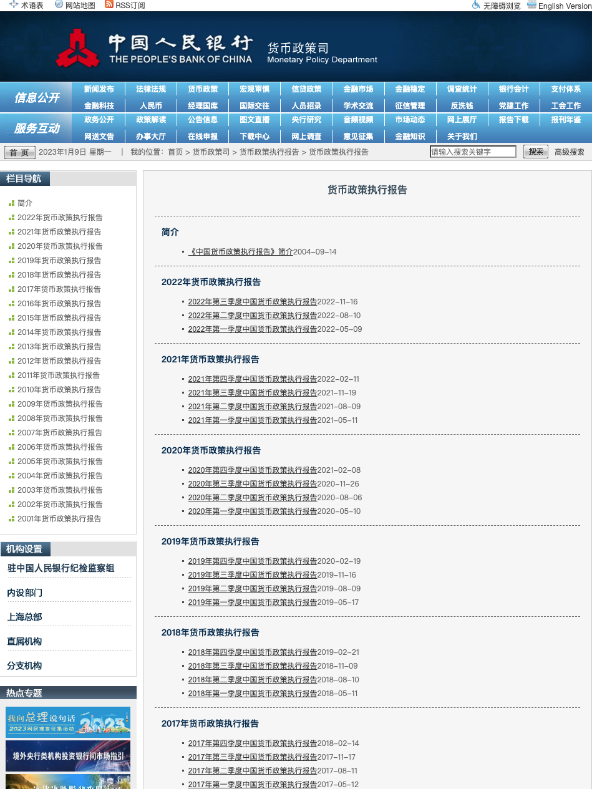
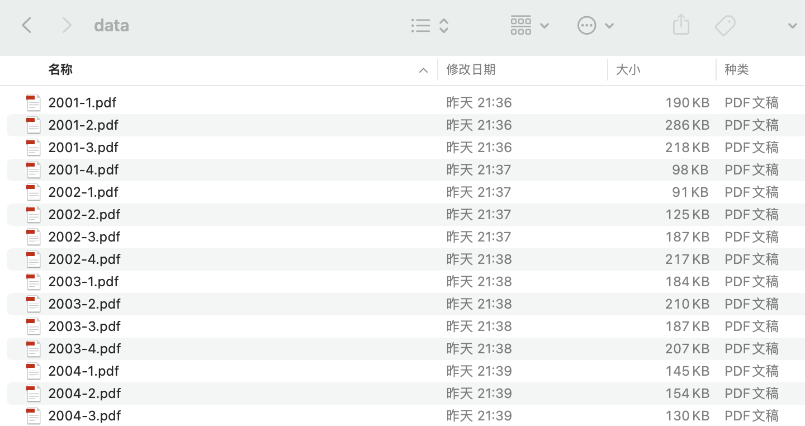
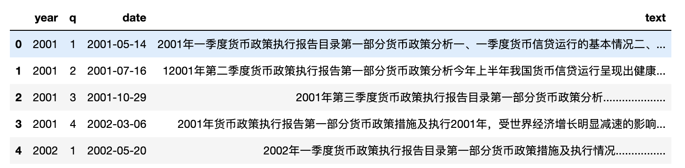
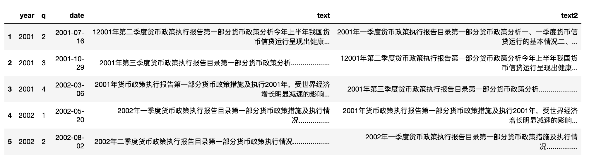
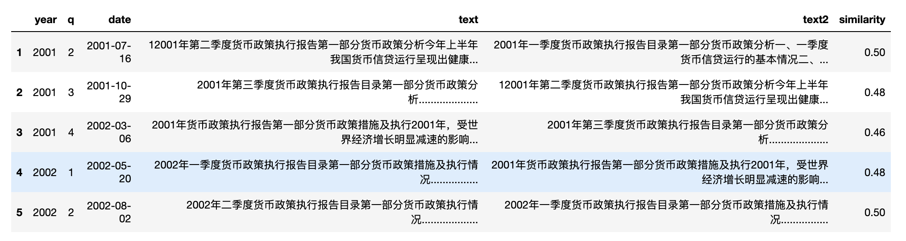

姜富伟,胡逸驰,黄楠.央行货币政策报告文本信息、宏观经济与股票市场[J].金融研究,2021,(06):95-113.
摘要:本文利用金融情感词典和文本分析技术,分析中国人民银行货币政策执行报告的文本情绪、文本相似度和文本可读性等多维文本信息,刻画央行货币政策执行报告的文本特征,探究货币政策报告的文本信息与宏观经济和股票市场的关系。实证研究发现,货币政策报告的文本情绪的改善会引起显著为正的股票市场价格反应, 报告文本相似度的增加会引起股票市场波动性的显著降低, 报告可读性对公布后股票市场的波动性影响不显著。货币政策报告文本情绪还与诸多宏观经济指标显著相关。进一步研究发现,引起股票市场显著反应的是报告文本情绪中反映货币政策指引的部分,而反映宏观经济历史状态的部分对股票市场的影响不显著。本文从文本大数据分析角度证明了我国央行沟通的有效性,对国内央行沟通相关研究形成了有益补充。
文文相似度很好用，下图是该论文中绘制的2001-2018年间的货币政策报告文本相似度。 前后相邻两个季度的货币政策文本相似度越高，说明政策相似性高，政策连贯性强(变化小)。如果相似度较低，则政策变动的风险较大，政策连贯性差(变化大)。

复现相似度
本文只实现文本相似度的度量、文本相似度趋势的可视化。
- 准备数据
- 相似度计算
- 可视化
1. 准备数据
首先先手动从 中国人民银行 下载货币政策报告。

下图是我下载好的报告

之后将其整理到csv中
import os
import csv
from pdfdocx import read_pdf
with open('pbc_reports.csv', 'a+', encoding='utf-8', newline='') as csvf:
#年份、季度、报告文本
fieldnames = ['year', 'q', 'text']
writer = csv.DictWriter(csvf, fieldnames=fieldnames)
writer.writeheader()
pdfs = ['data/{}'.format(f) for f in os.listdir('data')]
for pf in pdfs:
data = {
'year': pf.split('/')[-1][:4],
'q': pf.split('/')[-1][5],
'text': read_pdf('data/2013-3.pdf'),
}
writer.writerow(data)
2. 读取数据
下载pdf时，遗漏了货币政策报告日期数据，将 pbc_reports.csv 修改为 pbc_reports.xlsx ，增加了 date 字段。
import pandas as pd
import warnings
warnings.filterwarnings('ignore')
df = pd.read_excel('pbc_reports.xlsx')
df.head()
Run

#让每一行含有前后两个季度的报告文本
df['text2'] = df['text'].shift(1)
df = df[1:]
df.head()
Run

3. 计算相似度
水平(行)方向，计算每一行中的 text 与 text2 两者的文本相似度。
import cntext as ct
def cosine_similarity(row):
#row 为 pd.Series 类型数据，类似于字段
try:
sim = ct.cosine_sim(row['text'], row['text2'])
return float(sim)
except:
#异常标记为1
return 1
#计算结果存储到 similarity 字段中
df['similarity'] = df.apply(lambda row: cosine_similarity(row), axis=1)
df.head()
Run

4. 绘制折线图
这里为了方便，使用 pandas_bokeh 库。 注意: 绘图不限于Python，各位也可以用excel、R。
参数:
- kind 图表类型，折线图line
- x 横轴字段
- y 纵轴字段
- xlabel 横轴标签
- ylabel 纵轴标签
- title 图标题
import pandas_bokeh
pandas_bokeh.output_notebook()
#选择折线图line
#
df.plot_bokeh(kind = 'line',
x = 'date',
y = 'similarity',
title = '2001~2022央行货币政策相似度趋势',
xlabel = '报告发布日期',
ylabel = '相似度')
Run

刚刚生成的图没有经过移动平滑处理，所以锯齿比较多。论文中使用三季度移动平均线处理了 similarity ，我在此将其命名为 ma3_similarity
import pandas_bokeh
pandas_bokeh.output_notebook()
#三季度移动平均线
df['ma3_similarity'] = df['similarity'].rolling(window=3, center=True, min_periods=1).mean()
df.plot_bokeh(kind = 'line',
x = 'date',
y = 'ma3_similarity',
title = '2001~2022央行货币政策相似度趋势',
xlabel = '报告发布日期',
ylabel = '相似度')
Run

基本复刻论文原图相似度的变化趋势
有了相似度变化序列数据， 可以使用 ruptures库， 找到政策变化的时间点， 参考 使用 Ruptures 识别时间序列数据中的变化点
代码下载
- 代码及视频讲解已经添加至 支持开票 | Python实证指标构建与文本分析 中，感兴趣的同学欢迎订阅该系列课，涵盖Python语法入门、数据采集、文本分析、机器学习等。
- 未订阅 支持开票 | Python实证指标构建与文本分析 的朋友们，可转发本文集赞30+， 加微信 372335839 ， 备注「姓名-学校-专业-央行相似度」，获取本文数据及代码。